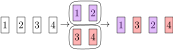
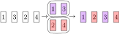

Exercice 0 - Échauffement
-Problème 0 : Rappelez-vous la fonction triangular-number,
qui calcule \(\sum\limits_{i=0}^{n} i\),
que nous avons implémentée la semaine dernière :
(define triangular-number
(lambda (k)
(if (eq? k 0)
0
(+ k (triangular-number (- k 1))))))
Ecrivez une version récursive de la même fonction.
-Problème 1 : Implémenter un fonction find-max telle que find-max soit
l'élément max dans l, où l est une liste de nombres.
Exemples de résultats attendus :
> (find-max (list 3 5 10 23 5 6))
23
find-max.
Exercice 1 - Mélanger les cartes
Supposons que l'on nous donne un jeu de \(n\) cartes, où \(n\) est pair et où chaque carte est étiquetée de façon unique par un nombre naturel compris entre \(1\) et \(n\). Nous allons maintenant procéder au mélange suivant du jeu de cartes, qui est initialement ordonné de manière à ce que les étiquettes des cartes soient croissantes : 1) Nous séparons le jeu en deux exactement au milieu. 2) Nous intercalons les cartes des deux moitiés.
Au final, nous obtenons à nouveau un jeu complet, mais l'ordre des cartes a changé. Par exemple, avec 4 cartes, nous obtenons ce qui suit : 
En répétant cette procédure, nous constatons que nous sommes revenus à l'ordre initial ! 
L'objectif de cet exercice est d'explorer ce phénomène intéressant. Une question naturelle que nous pouvons poser par exemple est la suivante : combien d'itérations, en fonction du nombre de cartes dans notre jeu de cartes initial, sont nécessaires pour revenir à l'état initial ?
-Problème 0 : Implémentez une fonction qui, étant donné une liste : 1) Si la longueur de la liste est paire, elle la divise en deux et renvoie les deux sous-listes (toutes deux de longueur égale à la moitié de la liste initiale), en conservant l'ordre des éléments.
2) Si la longueur de la liste est impaire, elle retourne la liste telle quelle.
Exemples de résultats attendus :
> (split-in-two (list 1 2 3 4 5 6))
'((1 2 3) (4 5 6))
> (split-in-two (list 1 2 3 4 5))
'((1 2 3 4 5) ())
-Problème 1 : Implémentez une fonction qui, à partir de deux listes
deux listes de même taille, elle les intercale pour en créer une nouvelle. Si
les listes ne sont pas de la même taille, elle renvoie simplement
null.
Exemples de résultats attendus :
> (perfect-shuffle (list 1 2) (list 3 4))
'(1 3 2 4)
> (perfect-shuffle (list 1 2) (list 10 20))
'(1 10 2 20)
> (perfect-shuffle (list 1 2) (list 3 4 5))
'()
-Problème 2 : Implémenter une fonction "is-ordered" qui retourne vrai si les éléments de la liste sont dans ordre croissant, sinon faux. Exemples d'attentes attendus :
> (is-ordered (list 1 2 3 4))
#t
> (is-ordered (list 4 3 2 1))
#f
> (is-ordered (list 5 3 20 7))
#f
> (is-ordered (list 4 5 6 7 8 9))
#t
En modélisant un jeu de cartes comme une liste, nous pouvons maintenant utiliser les fonctions ci-dessus pour simuler nos mélanges et répondre à notre question initiale pour certaines tailles fixes de jeux de cartes :
1) Pour un jeu de 4 cartes, 2 mélanges sont nécessaires comme nous l'avons vu dans l'exemple.
2) Pour un jeu de 6 cartes, 4 mélanges sont nécessaires.
3) Pour un jeu de 8 ? Devinez...
Devoir à rendre sur le moodle
Implémentez une fonction my-remove qui, étant donné une liste l de nombres
et un nombre e, supprime toutes les occurrences (potentiellement zéro ou
plus d'une) de e dans l. Plus précisément, la fonction renvoie une
nouvelle liste dont les éléments sont tous les éléments de l à l'exception
de toutes les occurrences de e, apparaissant dans le même ordre que l'entrée
initiale.
Exemple de résultats attendus :
> (my-remove (list 1 2 3 2 1) 2)
'(1 3 1)
> (my-remove (list 1 2 3 2 1) 5)
'(1 2 3 2 1)
> (my-remove (list 10 55 32 27 55 55) 55)
'(10 32 27)